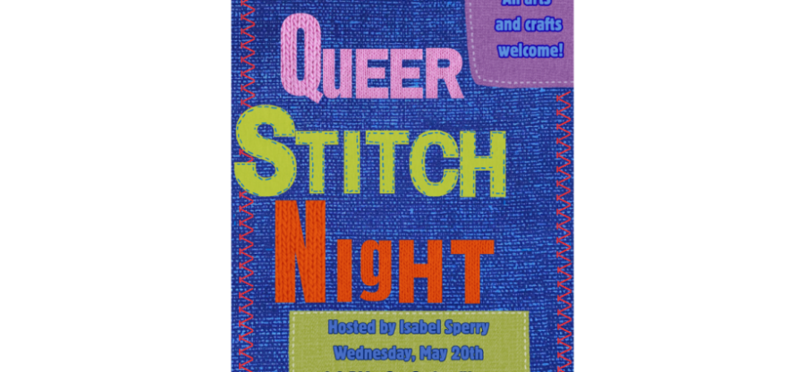

May Queer Stitch Night
Join fiber artist, educator, and researcher Isabel Sperry (she/her) for an evening of crafting on Wednesday, May 20th, from 6-8 PM at Gerber/Hart!
Whether you are an experienced fiber artist or are looking to start your first project, you are welcome at this free event! While Isabel isn’t an expert at every fiber art form out there, she is more than happy to provide some technical support and help to foster a community of crafters. Fiber arts not your thing? No worries! Bring a sketch book, a laptop to write, or a novel to read and enjoy this community space.
Supplies are not provided, but we will have a limited number of collage materials, scissors, glue, markers, etc. available.